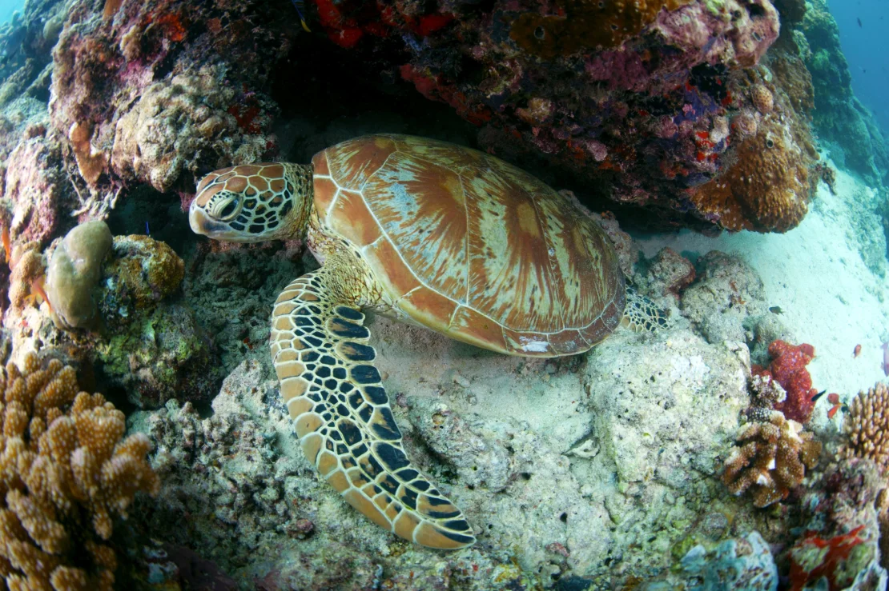
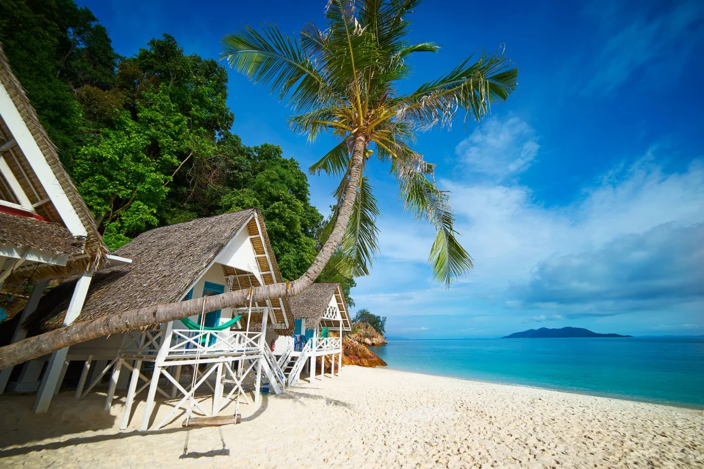
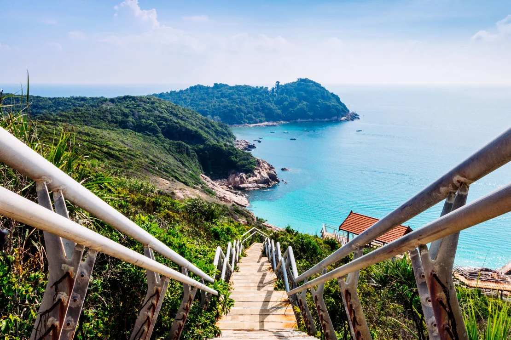
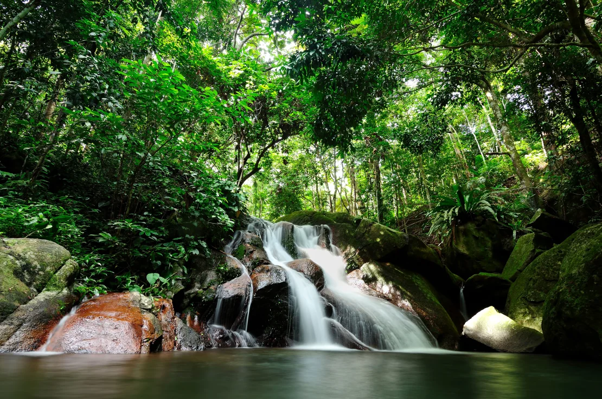
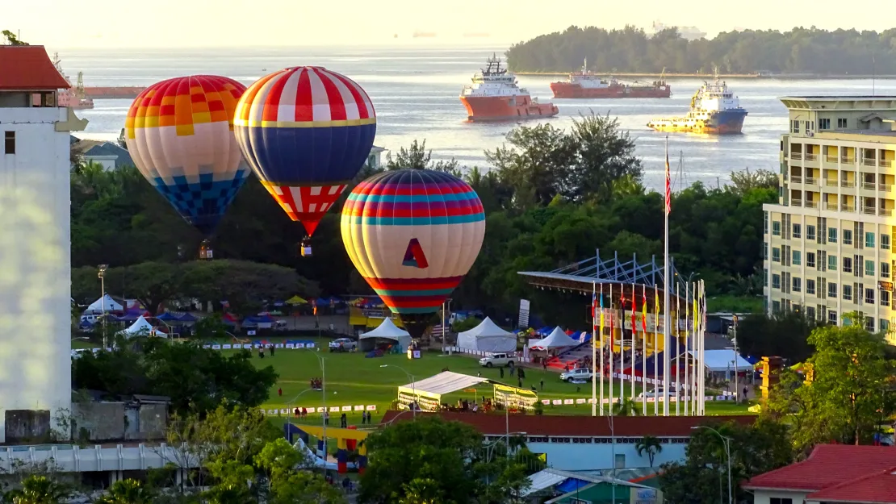

TERENGGANUAt the end of 2002, following a long dispute with Indonesia, the International Court of Justice ruled that the island of Sipadan was Malaysian.
The country, and the state of Sabah of which it is part, had reason to be relieved. Sipadan is considered one the world’s best dive sites, with a location in the center of the planet’s most biodiverse marine habitat.
To protect the fragile ecosystem of this Malaysia holiday destination, in 2004 the government ordered all of the dive resorts off the island, banned night dives and set a limit of 120 divers per day.
The move worked, as the surrounding waters continue to teem with life.
It’s home to 3,000 species of fish, hundreds of species of coral, an abundance of rays and sharks and large populations of green and hawksbill turtles.

JOHOR RAWAThere aren’t many chances to stay on a sultan’s private island. Rawa is one. Owned by the family of the Sultanate of Johor, Rawa is a small island 16 kilometers off the east coast of Peninsula Malaysia.
Only two resorts hug its white-sand fringed west coast, which is accessible by boat from the mainland port of Mersing (also the departure point for more distant Tioman).
Because of this exclusivity, Rawa attracts tourists looking for a more secluded vacation. While the west coast is postcard perfect, the rest of the shoreline consists of inaccessible, dramatic rocky cliffs that plunge directly into the sea.
To check these out, take the easy way and rent a canoe or hike up steep steps to the summit of the island, from where you have vantages of the eastern shore, the coast of Johor and the other 12 small islands that make up the Johor Marine Park.

PERHENTIAN ISLANDSThey might not be easy to get to, but the Perhentian islands off the northeast coast of Peninsular Malaysia have achieved iconic status on the backpacker trail. And for good reason – the waters are so clean that you can snorkel right off the beach and still see a diverse array of aquatic life. Fishermen turned tour guides will also take you out in their small boat for a day trip to swim with sharks and turtles.
In the evening, beach bars set up cushions on the sand as wandering fire artists do their thing.

TIOMANAlthough part of the Malaysian state of Pahang, Tioman is actually reached from the Johor town of Mersing. There’s also a direct ferry from Singapore.
This popular Malaysia holiday island has two claims to fame that continue to be hyped by media and marketers.
First is the dramatic topography of this teardrop-shaped isle in the South China Sea that was (supposedly) used as a backdrop for the 1958 movie “South Pacific.” Then Time magazine named it one of the world’s most beautiful islands in the 1970s.
Though it’s now a firm fixture on the tourist trail and has lost a little of its exotic mystique, it retains the natural environment and wildlife that first made it famous.
First among animals, on land at least, are the giant monitor lizards that roam among the kampungs (Malay for villages) in search of food. Don’t worry, they avoid humans. Most of the time.REDANG ISLANDSThe Redang archipelago actually consists of nine islands. Together, they form a marine park situated 45 kilometers (28 miles) off the east Peninsular Malaysia state of Terengganu.
Unlike its close cousins, the backpacker-filled Perhentian islands to the north, Redang is very much an upmarket destination, with mostly resort accommodation on offer.
Accordingly, the island also has its own airport, served by Berjaya Air, which since 2004 has flown daily to Kuala Lumpur’s Subang Airport (Sultan Abdul Aziz Shah Airport is the formal name) and Singapore’s Changi.
With excellently preserved coral, the main attractions of Redang are snorkeling, diving and the crystal clear waters.
You’ll need to stick close to the shoreline regardless, as the interior is mostly impassable, apart from a road that connects the airport with the coast.
In 2000, the Malaysian island was the setting for Hong Kong movie “Summer Holiday,” which featured Cantopop star Sammi Cheng and Taiwanese heartthrob Richie Ren. The success of the film led to an influx of tourists.

SABAHLocated off the coast of East Malaysia on Borneo and sandwiched between the states of Sarawak and Sabah, Labuan is one of three Federal Territories (the others are Kuala Lumpur and Putrajaya).
Its special status as an international offshore financial center and free trade zone has allowed it to attract outside investment from the financial sector.
Long-term, the Malaysian government envisions the island as becoming one of the world’s major offshore business centers, akin to the Middle Eastern hubs of Dubai or Bahrain.
If you’re not involved in the financial services, there are other reasons to visit such as wreck diving. Over the years, numerous ships were sunk in the shallow waters off Labuan, making it ideal for novice divers. These are simply known as the American, Australian, Blue Water and Cement Wreck.
.webp)